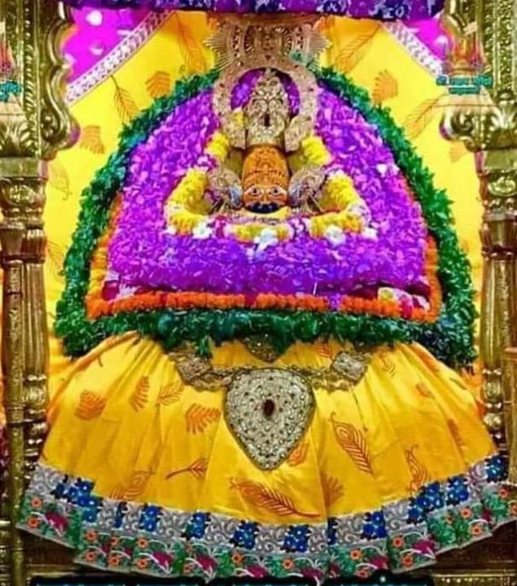

Shyam baba is the Lord of Kalyuga. He is the son of the Pandav Bheem.he is worshipped as the incarnation of Lord Krishna with a great festival whic takes place in the hindu month of Phalgun.

The Mandal
the mandal was setup in 1972 to spread the name of Lord Shyam. Jai Baba Ki
Temple
The Shyam Baba temple in Khatushyamji is handled by the mandir committee and sees lakhs of visitors each month. Another temple in Reengus also sees its fair share of visitors. more content to come. Teen Baan Dhaari Ki Jai